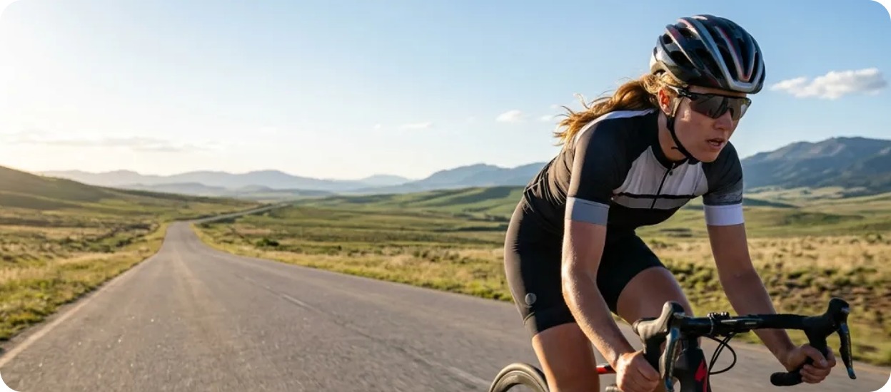
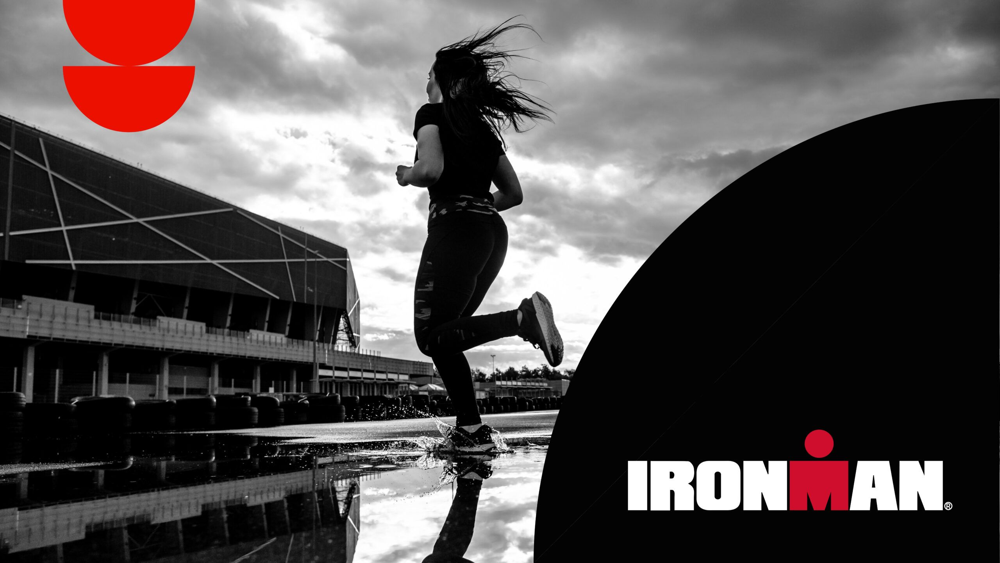
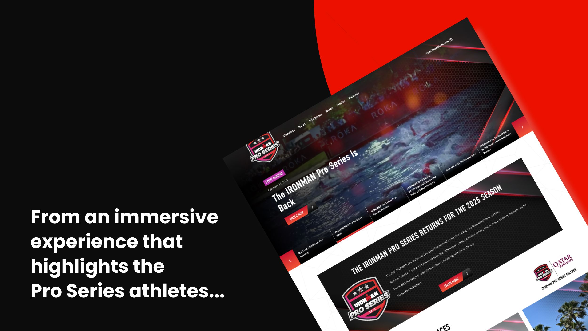
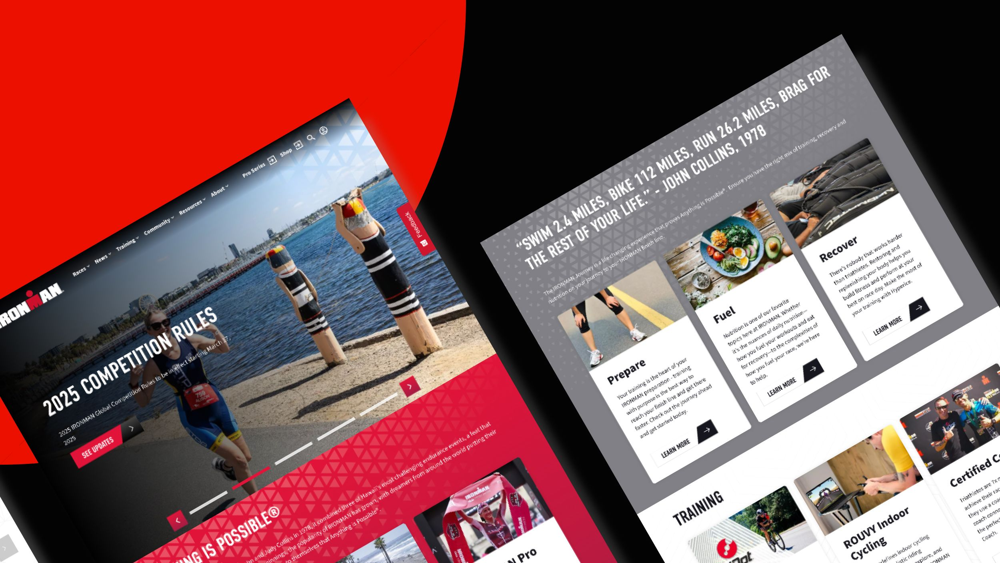
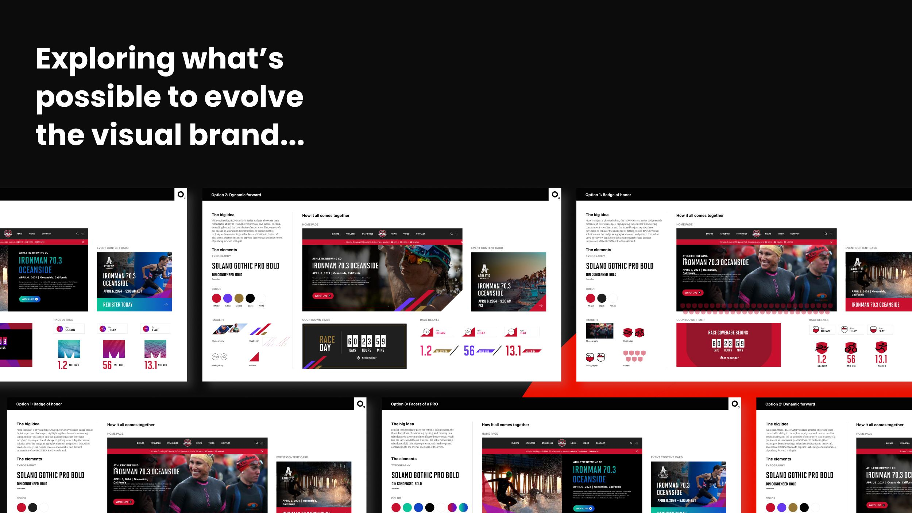
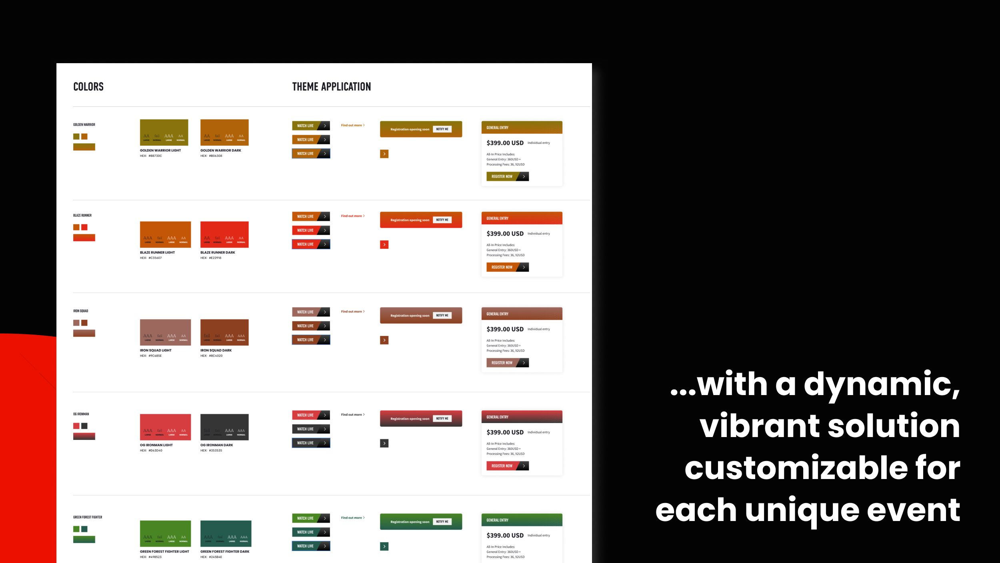
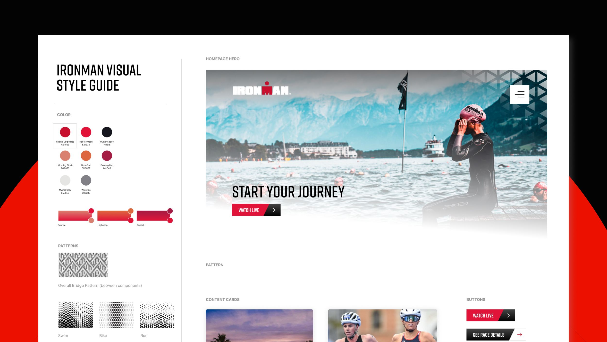

Ironman
IRONMAN
IRONMAN’s CMS was heading for end of life with thousands of pages of unstructured data behind it. We unlocked their marketing team by migrating thousands of pages to a flexible, enterprise CMS.
-
75 daysFrom start to delivery of the Pro-Series experience
-
40KNew users on Pro Series site on launch day
-
up 33%y/y actions taken (IRONMAN.COM)
-
up 9%y/y user engagement (IRONMAN.COM)
01 — Opportunity
A CMS at end of life, and a date already announced
IRONMAN, a premier endurance sports brand, faced a critical technological crossroads with their digital presence. Their existing content management system (CMS) had become a significant bottleneck, hampering both content administration and marketing initiatives. Additionally, the current CMS was facing an inevitable end of life for its support. The challenge was particularly complex given the system’s outdated architecture and the vast amount of unstructured data spread across thousands of pages.
After conducting a comprehensive market analysis, IRONMAN selected Drupal CMS paired with Acquia’s platform as their foundation for digital transformation. During this strategic planning phase, IRONMAN made a pivotal decision to prioritize their Pro Series events, announcing an ambitious timeline for a new digital experience launch in April 2024, followed by a complete overhaul of the main IRONMAN website later in the year.
This multifaceted transformation required more than just technical expertise – it demanded a partner who could seamlessly blend digital strategy, user experience design, and technological implementation while maintaining the agility to adapt to changing requirements. The goal was not just to modernize their platform, but to reinvigorate brand sentiment and reassert IRONMAN’s digital authority in the endurance sports space.
- Strategy
- A phased plan: the Pro Series experience for the announced April 2024 date, then the full ironman.com overhaul later in the year.
- Design
- User experience design that puts athletes at the center — dynamic video, bold visuals, and navigation built to tell their stories.
- Technology
- Drupal CMS on Acquia’s platform, chosen after a market analysis, replacing a system heading for end of life.

02 — Solution
Pro Series first, then all of ironman.com
To bring IRONMAN’s vision to life, O3 crafted a phased strategy that balanced speed and quality. For the Pro Series launch, we built an immersive digital experience that put athletes at the center—using dynamic video, bold visuals, and intuitive navigation to tell their stories. Brightcove powered seamless live and on-demand streaming, while Drupal enabled the IRONMAN team to maintain a steady flow of content. Integrated race standings and real-time stats brought the action to life, turning the platform into a true destination for the endurance community.
Building on that momentum, the ironman.com transformation focused on delivering a seamless experience for every user—from first-timers to seasoned pros. We migrated thousands of pages from a legacy system into Drupal Acquia’s component-based architecture using a custom migration framework. Acquia Site Studio provided the foundation, extended with bespoke components for greater interactivity and storytelling. The site now integrates with IRONMAN’s Event Manager API, mapping tools, and data feeds—creating a cohesive digital ecosystem that elevates the brand and redefines how users explore and engage.

-

-

-

-
